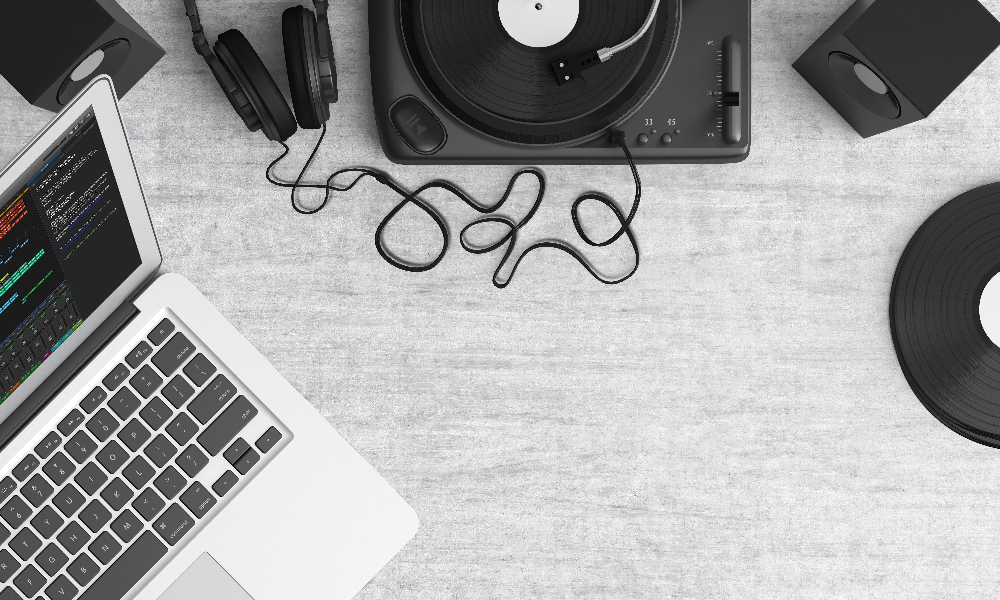

<section class="home">
  
  <div class="homecontent">
    <h1>Musikplayer und Converter</h1>
   <div class="search-upload-container">
      <app-search class="app-search"></app-search>
      <app-upload class="app-upload"></app-upload>
    </div>
  </div>
</section>
